LibreOffice Writer

Bienvenido/a
Bienvenido/a al módulo de LibreOffice Writer.

Introducción
Writer es el procesador de textos, posee todas las características habituales de un procesador de texto (revisión ortográfica, diccionario de sinónimos, división de palabras, corrección automática, buscar y reemplazar, generación automática de tablas de contenido e índices, combinar correspondencia y otras), Writer proporciona las siguientes características importantes: Plantillas y estilos, diseño de página, herramientas de dibujo integrado, entre otros.
Unidad I
Exploración del ambiente de Writer

Descripción de unidad I
Se muestra como abrir Libre Office Writer desde Linux Max, explorar la interfaz principal entre las cuales se describen las diferentes barras de herramientas con las que cuenta, así como también los diseños de vista y zoom del documento.
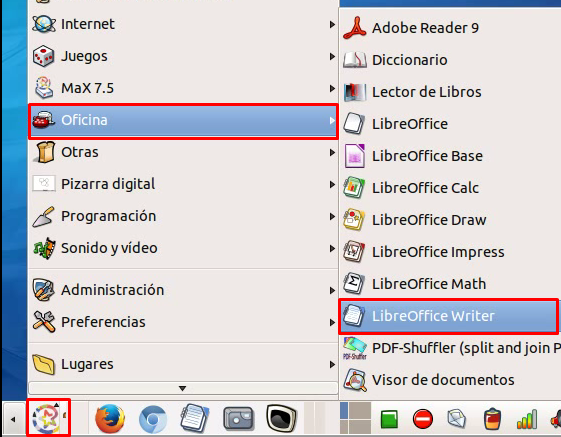
Abrir LibreOffice Writer
Para abrir LibreOffice Writer desde Linux Max se siguen los siguientes pasos:- Clic en Menú Principal.
- Ir a opción Oficina.
- Clic en LibreOffice Writer.
Abrir LibreOffice Writer
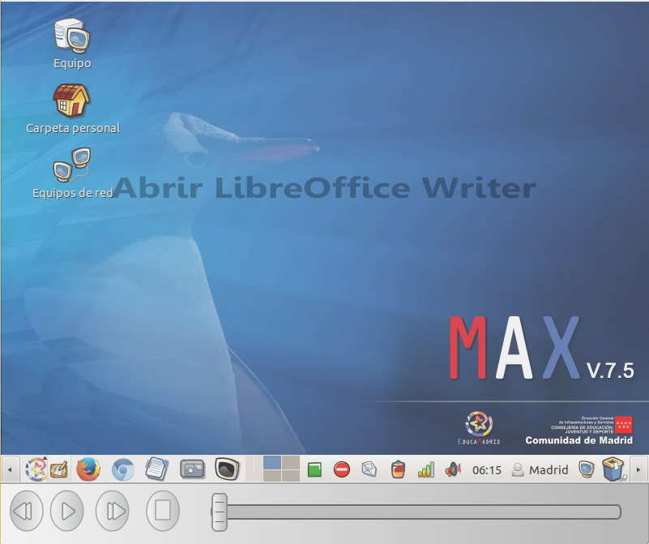
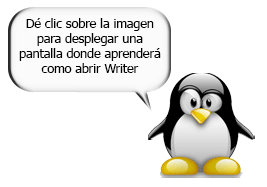
Interfaz de usuario
El entorno visual de Writer es intuitivo, de forma que al abrir el programa se tiene a la vista herramientas necesarias para crear y editar textos.
- Barra de título.
- Barra de menús.
- Barra estándar.
- Barra de formato.
- Área de Trabajo.
- Barras de desplazamiento.
- Barra de estado.
Barras de LibreOffice Writer
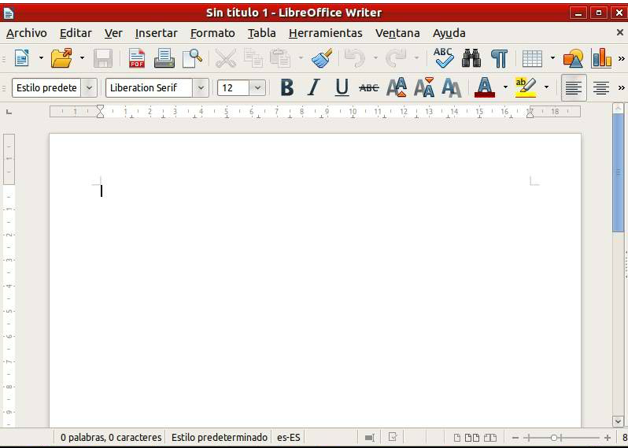
Diseño de la vista
Writer tiene diferentes formas de visualización de documentos: automático, página sencilla y columnas. Para tener acceso a ellas y otras opciones más, se elije el menú Ver y luego hacer clic sobre la visualización deseada.
El diseño de vista interacciona con el zoom o escala para determinar cuántas páginas pueden verse en la ventana del documento.
Diseño de la vista
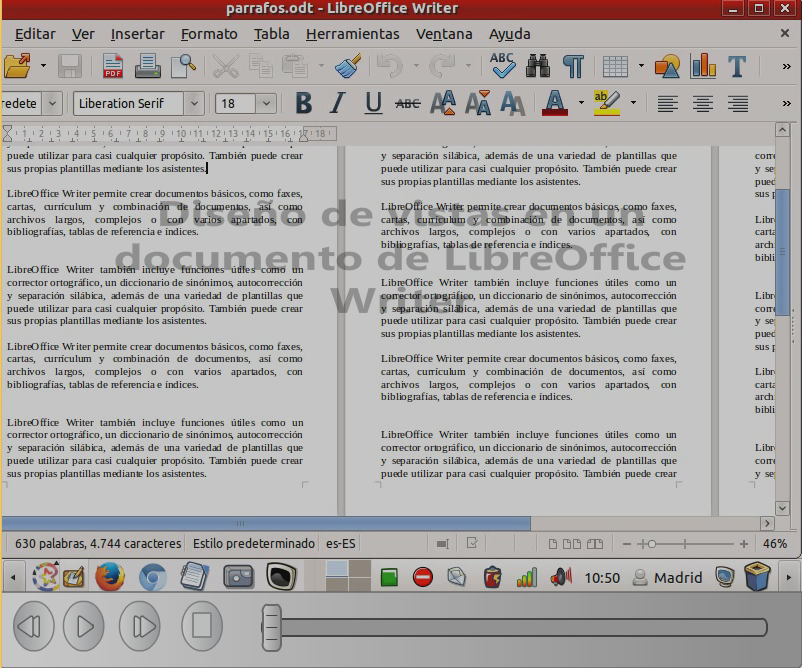
Zoom a escala
Reduce o aumenta el tamaño de la visualización en pantalla del documento actual. Haga clic en la flecha que hay junto al símbolo para abrir la barra de herramientas Escala.
Para cambiar el tamaño de la vista, arrastre la barra deslizante Escala, o haga clic en los signos + y –, o haga clic en la propia barra deslizante.
El zoom o escala interacciona con el diseño de vista seleccionado para determinar cuántas páginas pueden verse en la ventana del documento.
Zoom a escala
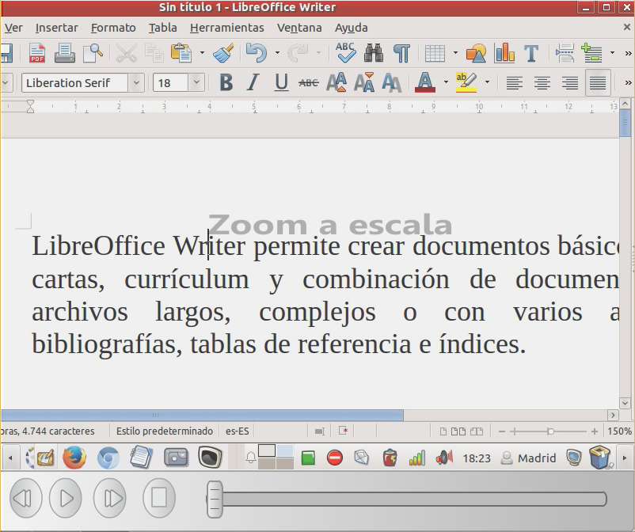
Unidad II
Trabajando con documentos
Descripción de unidad II
Contiene las operaciones básicas que pueden realizarse con los documentos Writer, como crear un nuevo documento, abrir y guardar documentos. Además de la forma de como corregir errores de ortografía y gramática.
Nuevo documento
Para crear un documento nuevo en LibreOffice Writer, puede realizarse de tres formas diferentes:
- Nuevo: Desde la barra de herramientas estándar.
- Menú Archivo - Nuevo - Documento de texto.
- También puede utilizar la combinación de teclas Ctrl + U.
Nuevo Documento
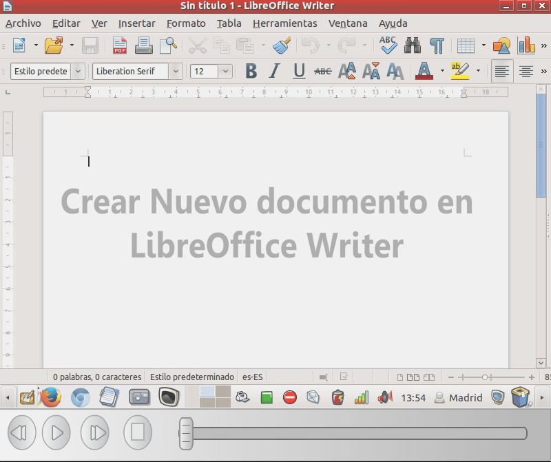

Abrir documento
Para abrir un documento existente en LibreOffice Writer, puede realizarlo a través de los siguientes procedimientos:
- Abrir: Desde la barra de herramientas estándar.
- Elija menú Archivo – Abrir.
- También puede utilizar la combinación de las teclas Ctrl + O.
Abrir documento
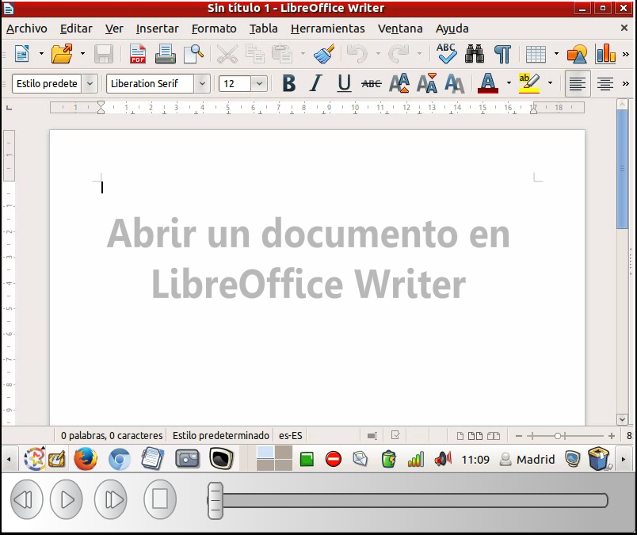
Guardar documento
Para guardar un documento creado en LibreOffice Writer, puede realizarse a través de los siguientes procedimientos:
- Guardar: Desde la barra de herramientas estándar.
- Elija menú Archivo – Guardar.
- También puede utilizar la combinación de las teclas Ctrl + G.
Guardar documento
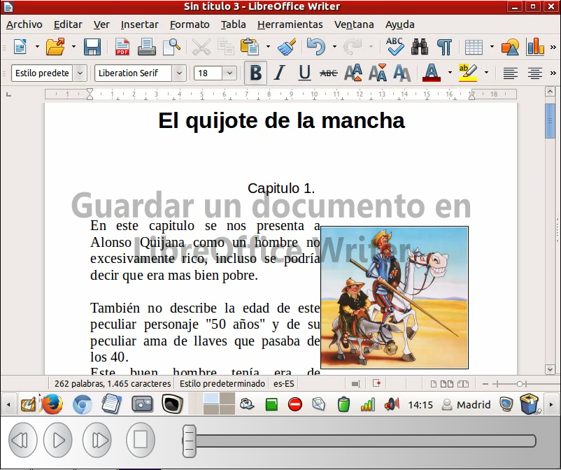
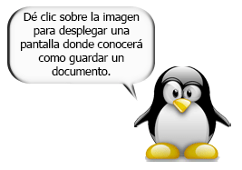
Copiar, cortar y pegar texto. El portapapeles
El portapapeles es una zona de la memoria que sirve para almacenar temporalmente algunos datos (texto, imágenes, formato, etc), y permite el intercambio de datos entre aplicaciones usando los procedimientos de Copiar, Cortar y Pegar.
- Copiar texto: Clic derecho sobre párrafo sombreado, copiar. También usando la combinación de teclas Ctrl + C.
- Cortar texto: Clic derecho sobre párrafo sombreado, cortar. También usando la combinación de teclas Ctrl + X.
- Pegar texto: Posicionar el cursor de la página sobre el área de la página donde se desea pegar el texto. Clic derecho, pegar. También usando la combinación de teclas Ctrl + V.
Copiar, cortar y pegar texto. El portapapeles
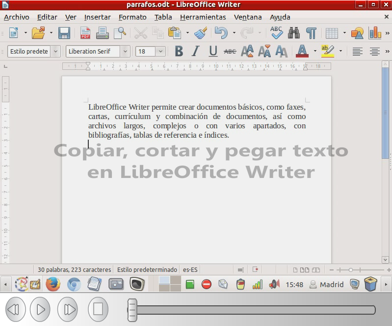
Buscar y reemplazar texto
Para buscar texto en todo el documento Ir a menú Editar - Buscar y reemplazar
Buscar texto
- Introduzca el texto que desea buscar en el cuadro de texto Buscar.
- Pulse en Buscar siguiente o en Buscar todo.
Reemplazar texto
- Introduzca el texto que desea buscar en el cuadro de texto Buscar.
- Introduzca el texto que reemplazará al texto encontrado en el cuadro de texto Reemplazar con.
- Puede hacer clic en Reemplazar o en Reemplazar todo.
Buscar y reemplazar texto
 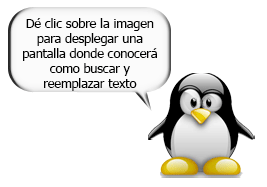
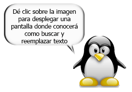
Ortografía y gramática
La revisión ortográfica comienza en la posición del cursor o al comienzo de la selección de texto.
- Menú Herramientas - Ortografía y Gramática.
- Cuando se encuentra un posible error de ortografía, se abre el cuadro de diálogo Revisión ortográfica y LibreOffice le ofrece algunas sugerencias de corrección.
Ortografía y gramática
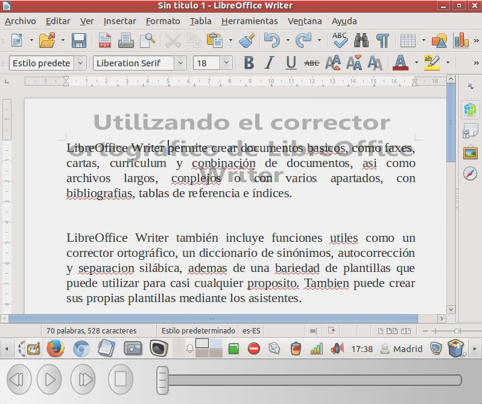
Unidad III
Trabajando con páginas
Descripción de unidad III
Se da a conocer las formar de trabajar en una página en Libre Office Writer, desde establecer márgenes, elegir el tipo y su orientación, numeración, encabezado y pie de páginas.
Orientación de páginas
Para orientar las páginas de un documento se realiza el siguiente procedimiento:
- Seleccione Menú Formato - Página.
- Haga clic en la ficha Página.
- En Formato del papel, seleccione orientación “Vertical” u “Horizontal”.
- Clic en Aceptar
Orientación de páginas
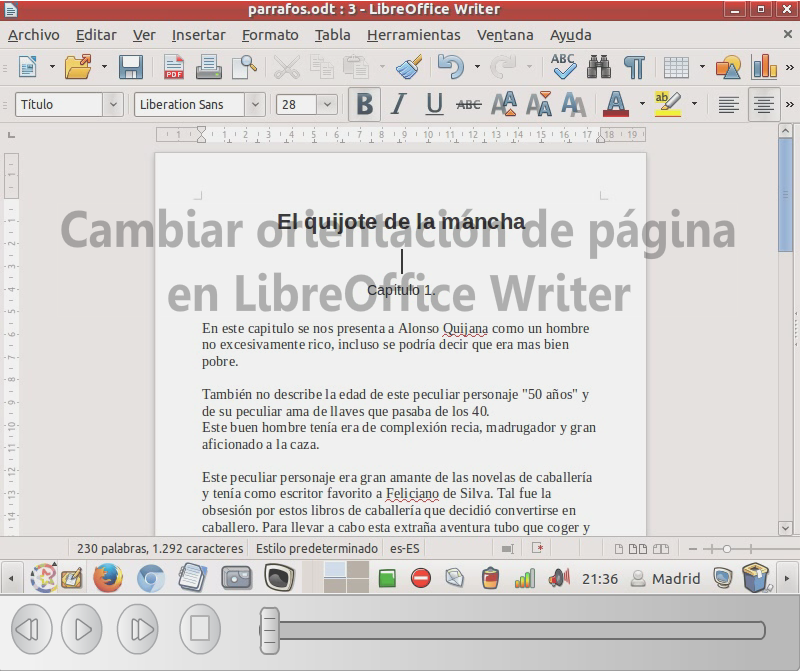
Cambiar márgenes de página
Se pueden cambiar los márgenes de las páginas de dos formas:
- Con las reglas: es fácil y rápido, pero poco específico.
- Con el cuadro de diálogo Estilo de página: puede especificar los márgenes con hasta dos decimales.
Cambiar márgenes de página
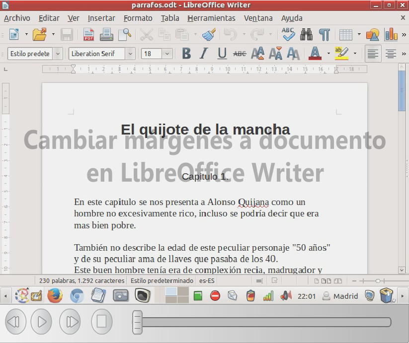
Columnas en un texto
Cuando se necesita que el texto aparezca en varias columnas pero sólo en parte de una página, es necesario usar una sección. Sin saber nada acerca de su uso, puede hacer esto fácilmente:
- Se selecciona el texto que desea que vaya a en columnas.
- En Menú Formato - Columnas, se selecciona el número de columnas deseadas.
- Clic en Aceptar
Columnas en un texto
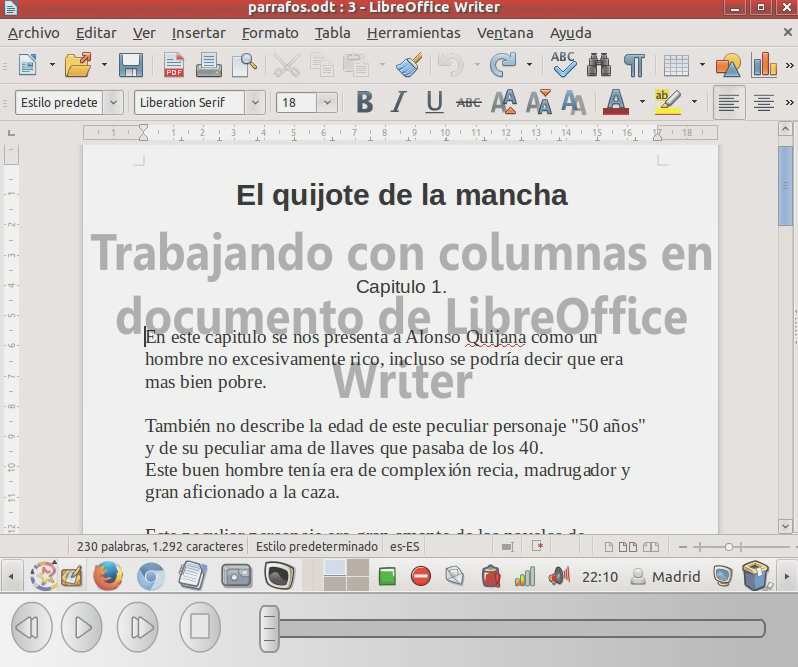
Numerar páginas
En Writer, un número de página es un campo que el usuario puede insertar en el texto.
- Seleccione Menú Insertar - Campos - Número de página para insertar un número de página en la posición del cursor.
Numerar páginas
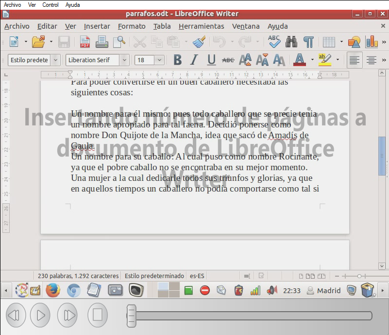
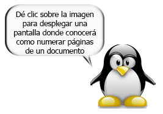
Encabezado y pie de páginas
Los encabezamientos y los pies de página son áreas en los márgenes superior e inferior de las páginas donde se puede añadir texto o imágenes. Los encabezamientos y los pies de página se añaden al estilo de página actual.
Cualquier página que use el mismo estilo recibe automáticamente el encabezamiento o el pie de página que se añada. Puede insertar campos, como los números de página y los encabezados de los capítulos, en los encabezamientos y pies de página de un documento de texto.
Encabezado y pie de páginas
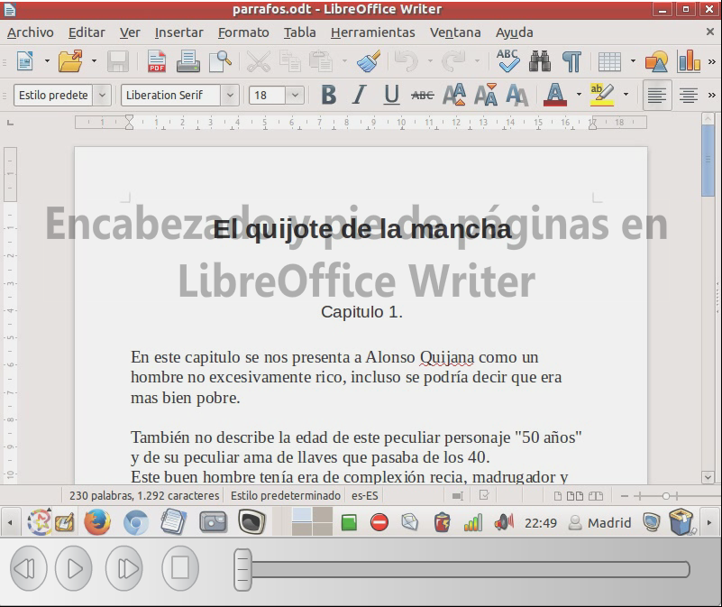
Unidad IV
Formato a párrafos
Descripción de unidad IV
Se explican los formatos que pueden aplicarse a los párrafos que contiene un documento, estos formatos pueden ser creados o usar los que por defectos tiene el programa, alineación de texto y uso de viñetas.
Uso de estilos predefinidos
LibreOffice Writer usa estilos de texto predefinidos para cuerpo de texto, titulo, subtitulo, citas bibliográficas, entre otros. Para cambiar el diseño de un bloque de texto debe seguir los siguientes pasos:
- Sombrear el texto a aplicar formato predefinido.
- Clic en Estilos predefinidos en la barra de formato.
- Elegir el estilo a aplicar.
Uso de estilos predefinidos
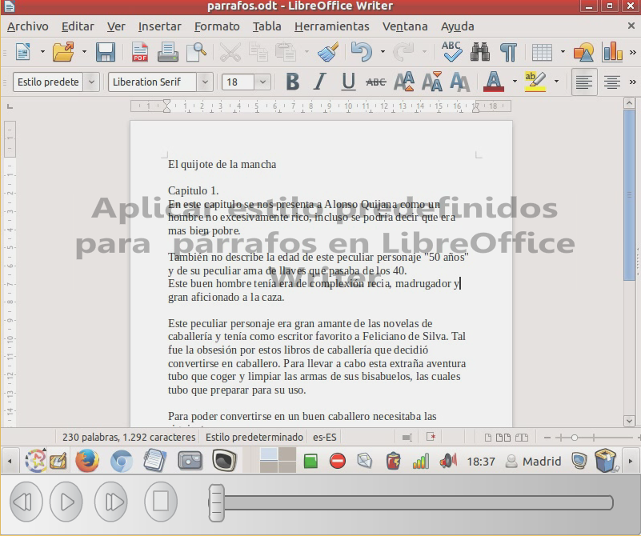

Crear estilos personalizados
Los estilos personalizados permiten al usuario crear sus propios estilos, estos de acuerdo a la necesidad que tenga al momento de elaborar un documento.
A través de los estilos personalizados puede generarlos para texto, gráficos, imágenes, etc.
Crear estilos personalizados
 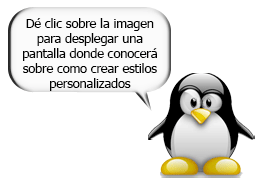
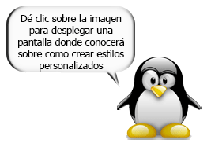
Formatos a párrafos
Los párrafos son unidades dentro del documento Writer que tienen sus propias características de formato, pudiendo ser diferentes de un párrafo a otro. Otras unidades más amplias son las secciones, que veremos más adelante.
Las características más importantes de formato de párrafo son la alineación y la sangría, ambas suelen estar disponibles en la barra de formato.
Formatos a párrafos

Listas y viñetas
Agrega numeración o viñetas al párrafo, y permite editar el formato de la numeración o las viñetas.
- Elija Formato - Numeración y viñetas.
- En la barra de herramientas Formato, clic en icono Numeración y viñetas.
Listas y viñetas
 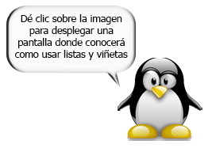
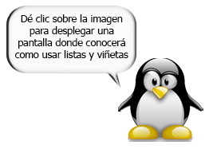
Unidad V
Trabajando con imágenes, tablas y gráficos
Descripción de unidad V
Se muestra cómo hacer para que los documentos elaborados en Writer contengan imágenes, gráficos estadísticos y tablas. Se sabe que el uso de estos componentes es esenciales a la hora de elaborar un documento, ya que permiten ilustrar y resumir información importante.
Creación de gráficos
Los gráficos pueden ser basados en los siguientes datos:
- Valores de hojas de cálculo desde rangos de celdas de Calc.
- Valores de celda desde una tabla Writer.
Los valores que usted introduce en el diálogo de la tabla de datos de gráficos (puede crear estos gráficos en Writer, Draw o Impress, y puede copiar y pegarlos también a Calc)
Creación de gráficos
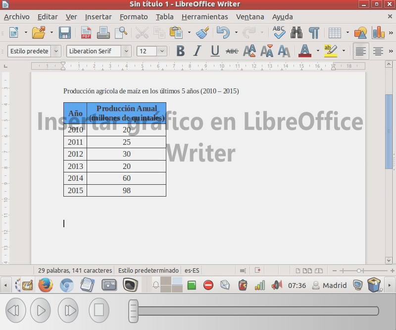
Insertar imágenes predefinidas
En la galería de LibreOffice Writer se pueden seleccionar gráficos y sonidos para insertar en los documentos.
El contenido de la Galería se puede mostrar en forma de símbolos solamente o de símbolos con información de título y ruta de acceso.
Insertar imágenes predefinidas
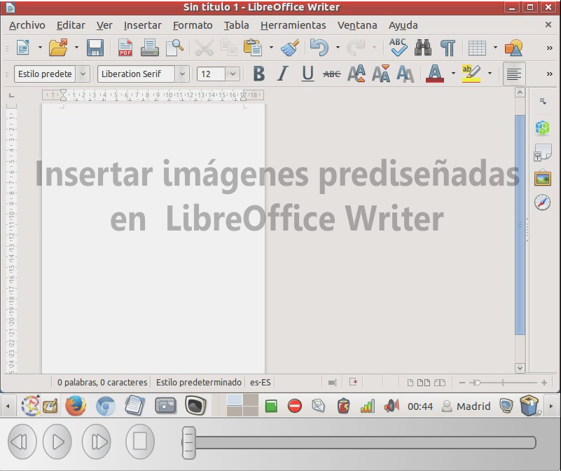
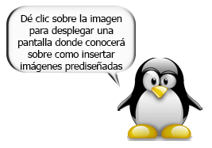
Insertar imágenes desde archivo
Para insertar imágenes desde archivo, realizar los siguientes pasos:
- Menú Insertar - Imagen - A partir de archivo.
- Busque el archivo de imagen que desee insertar y pulse Abrir.
Insertar imágenes desde archivo
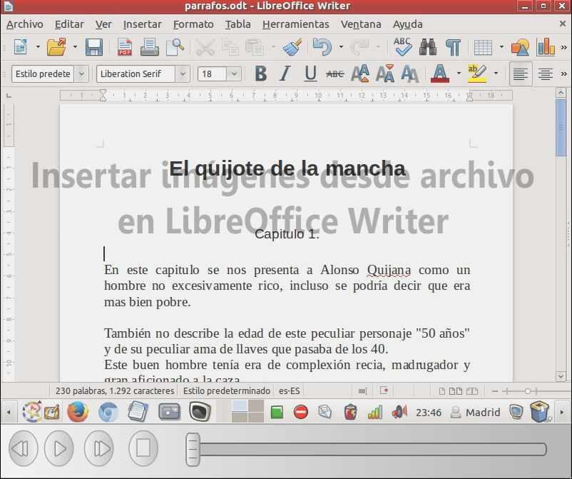
Recortar Imagen
En Writer, a diferencia de otros procesadores de texto, no se dispone de un botón específico que permita recortar una imagen de forma gráfica.
Con la configuración estándar del programa se debe acceder primero a las propiedades avanzadas de la imagen, luego seleccionar la ficha “Recortar” y finalmente indicar el recorte en centímetros que se desea efectuar en alto, ancho, etc.
Recortar Imagen
Insertar tablas
Una tabla está formada por celdas o casillas, agrupadas por filas y columnas, en cada casilla se puede insertar texto, números o gráficos.
Las tablas permiten mejorar el diseño de los documentos ya que facilitan la distribución de los textos y gráficos contenidos en sus casillas.
Insertar tablas
Unidad VI
Combinar Correspondencia
Descripción de unidad VI
Se aprenderá a realizar múltiples copias de un mismo documento, personalizadas para cada uno de los destinatarios de una lista (carta modelo), a este método se le conoce como combinar correspondencias.
Crear una fuente de datos
Una fuente de datos suele ser una base de datos que contiene los datos de las personas para las que queremos crear la correspondencia.
LibreOffice puede acceder a diversas fuentes de datos: hojas de cálculo, ficheros de texto, bases de datos MySQL, Adabas y bases de datos que acepten conexiones ODBC.
Crear una fuente de datos

Crear una carta modelo
La herramienta “Combinar correspondencia” permite crear (e imprimir):
- Múltiples copias de un mismo documento, pero personalizadas para cada uno de los destinatarios de una lista (carta modelo).
- Etiquetas postales.
- Sobres.
Crear una carta modelo
Unidad VII
Imprimir desde Writer
Descripción de unidad VII
Se muestra la forma de como imprimir un documento, así como también exportar los documentos en formato de documento portátil conocido como PDF.
Imprimir un documento
Especifica parámetros de impresión dentro de un texto. Estos pueden ser documentos completos, secciones, entre otras opciones.
Para imprimir un documento seguir los siguientes pasos:
- Clic en Menú Archivo – Imprimir – establecer los parámetros de impresión, clic en Aceptar.
Imprimir un documento

Exportar documento a PDF
Guarda el archivo del formato de documento portátil (PDF). Un archivo PDF se puede ver e imprimir en cualquier plataforma sin alterar el formato original, siempre y cuando esté instalado el programa correspondiente.
Para exportar un documento a PDF seguir los siguientes pasos:
- Clic en Menú Archivo – Exportar a PDF – establecer los parámetros, clic en Aceptar.
Exportar documento a PDF
Fin del Módulo de LibreOffice Writer